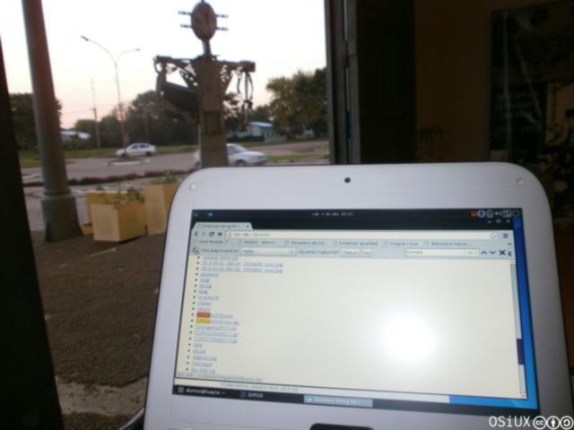

huayra grub rescue error unknown filesystem
index | OSiUX | blog | docs | charlas
mmmm que rarooo…
Luego de una exitosa jornada de dos días instalando
Huayra 1 en el Primer Encuentro de Software Libre en
Monte Caseros 2, como no podía ser de otra manera, justo
a última hora, el último día la netbook de "la directora" dejó de
arrancar tras instalar Huayra 1.0 y en su lugar apareció un bonito
mensaje de error grub rescue> error unknown filesystem

linux.mod
Apelando a nuestros conocimientos de recuperación empezamos a tirar
comandos, básicamente se puede listar el contenido de cada
partición haciendo ls (hd0,1)/ y rápidamente vimos que el comando
insmod linux.mod fallaba porque no existía el archivo en
(hd0,1)/boot/grub/linux.mod entonces vimos la ubicación original
del archivo al copiarse el paquete es
/usr/lib/grub/i386-pc/linux.mod pero tampoco estaba, evidentemente
justo ese archivo no se copió al instalarse, por algún motivo que
ignoramos por ahora.
super grub2 disk al rescate de grub
No quedaba otra que corregir grub pero aún booteando desde un
pendrive no se lograba iniciar el sistema, asi que buscamos alguna
distro de rescate, encontramos Rescatux 3 y
SuperGrub2Disk 4, ésta última ocupaba apenas 7mb la
ISO, asi que era la indicada a probar dada la simplicidad y que
nuestra conexión al mundo era muy angosta de banda.
Descargamos la ISO y verificamos el MD5:
# wget http://download.berlios.de/supergrub/super_grub2_disk_hybrid_2.00s1-beta1.iso # wget http://download.berlios.de/supergrub/super_grub2_disk_hybrid_2.00s1-beta1.iso.md5 # md5sum super_grub2_disk_hybrid_2.00s1-beta1.iso 952a48942df720f579ebca0d09f197c4 super_grub2_disk_hybrid_2.00s1-beta1.iso # cat super_grub2_disk_hybrid_2.00s1-beta1.iso.md5 952a48942df720f579ebca0d09f197c4 super_grub2_disk_hybrid_2.00s1~beta1.iso
Intentamos instalarla en un pendrive de diversas maneras, primero
usando unetbootin 5 la cual no funcionó.
Luego usando dd a la unidad, pero tampoco funcionó:
dd if=supergrub.iso of=/dev/sdb
Finalmente la fórmula ganadora fue:
dd if=supergrub.iso of=/dev/sdb1
Booteamos con SuperGrub2Disk y elegimos una opción que no encontró nada de nada:
En el segundo intento tuvimos éxito!:
instalando grub
Una vez iniciado el Huayra de la netbook con la ayuda de
SuperGrub2Disk procedimos a reinstalar grub:
grub-install /dev/sdb
booteando Huayra
A festejar Huayra salió andando de una, "la dire" contenta:
compartir es bueno
Aprovechamos a copiar algunas de las presentaciones que se dieron
en el evento, como asi también el Libro Redes Inalámbricas en los
Países en Desarrollo 6 ya que se quedaron muy
entusiasmados por las charlas sobre Redes Libres 7,
también las ISO de Huayra 1.0 8 y Huayra
Live 9 y de paso el video Códigos
Cooperativos 10, porque si de algo estamos
seguros es que Compartir es Bueno y por ello este artículo, si a
alguno le llega a pasar este error o algo similar con grub, ahora
saben como solucionarlo en pocos pasos.
